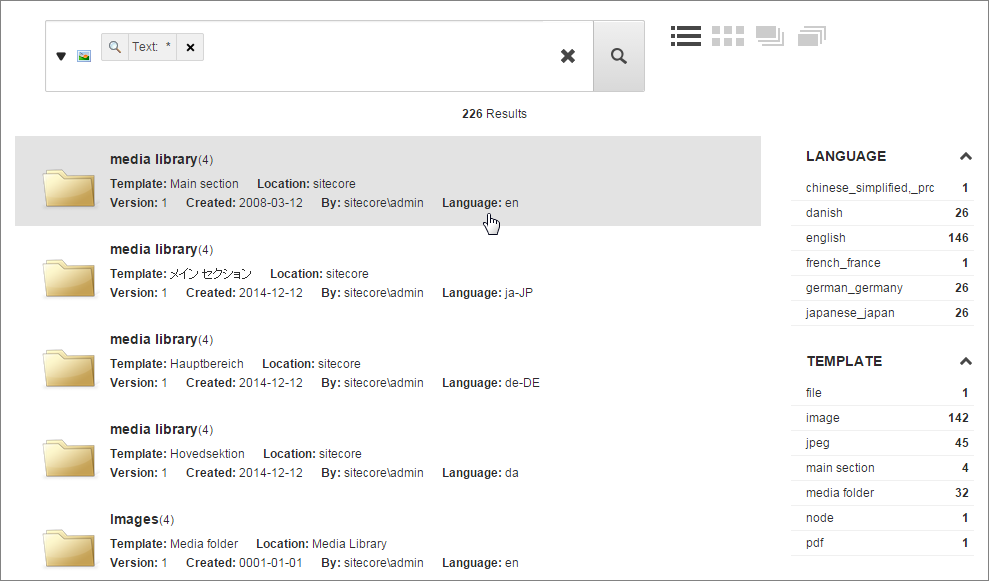

Facets
Facets group and classify content items. Use facets to filter and limit search results after running searches.
Facets group and classify content items, for example, by the language that they are in, the date on which they were created, or the template they are based on. Users use facets to filter and limit search results after running searches. Sitecore shows the facets of a search result to the right of the search result itself:
|  |
In this example, one of the facets is called Language, and this facet has the following filters:
chinese_simplified_prg
danish
english
french_france
german_germany
japanese_japan
When users click, for example, the danish filter, only items where the Language facet has the value danish will be shown.
For any given facet (such as Language), Sitecore creates the filters (such as danish) dynamically. The filters are based on data, and they change if and when data changes.
Sitecore only shows a facet and its filters when it is relevant to the actual search result. This behavior is dynamic.
Sitecore provides these facets and uses them, for example, when users search in the Content Editor:
Facet | Description |
|---|---|
Author | Groups the results according to the authors who created the items. |
Author Template | Groups the results according to a combination of author and template. |
Bucket | Groups the results according to the buckets that they are stored in. |
Creation Date & Author | Groups the results according to the date that items were created and who authored them. |
Date Range | Groups the results in date ranges: Today, Yesterday, 2-4 days ago, and so on. |
File Size | Groups the results according to the size of the file. The groups are (numbers in bytes):
|
File Type | Groups the results according to file type. |
Image Dimensions | Groups the results according to the dimensions of the images they contain. |
In Workflow | Groups the results according to the workflow they are in. |
Language | Groups the results according to language. |
Language Template | Groups the results according to the languages that the templates are in. |
Location | Searches all the bucket locations and groups the results according to which buckets the results are stored in. |
Tags | Groups the results according to their tags. |
Template | Groups the results according to templates. |
Template Author | Groups the results according to a combination of template and author. |
Updates Date | Groups the results according to the date that items were last updated. |
Facets are stored at: /sitecore/system/Settings/Buckets/Facets. You can create a facet by right-clicking on a Facets item and selecting Insert, Facet in the context menu and then specifying a name for your new facet.
You can create folders for your facets. This can make it easier to get an overview of the facets and help separate the facets you create from the facets that Sitecore delivers.
You can configure facets you create in two different ways:
You can specify item field names. When you specify a field name in the Field Name field of the facet item, Sitecore creates a facet based on this field. You can enter multiple field names as a comma-separated list and when you do, Sitecore creates hierarchical filters (for example,
belts/black,belts/white, and so on.) You specify the field name in lower case, and use the name of the field as it is in the index.Fields that can have many different values across items are not good candidates for facets, and you should avoid using such fields. For example, a field that has a unique value in each item would cause Sitecore to create a filter for each item.
You can specify a reference to a class that implements the ISimpleFacet interface in the Facet Filter field. You have to create this class yourself, and it has to return a string. You can implement logic in this class that determines the filters that the facet should search for.
The intention is that this class reduces the number of filters. This is how some of the Sitecore search facets are implemented, for example, Date Range or File Size.
Facets can be global or local. Global facets are used for all searches in all parts of the content tree. The search facets delivered by Sitecore are global facets. To specify that a facet is a global facet:
Select the Global Facet field in the Facet section of the facet.
Local facets are used for a specific item bucket or for an item in the content tree (and the items that are descendants of this item). To specify facets for an item bucket or an item:
Select facets in the Facets field of the Indexing section of the item bucket or item.
You can create and use facets in SPEAK applications with the FilterControl component.